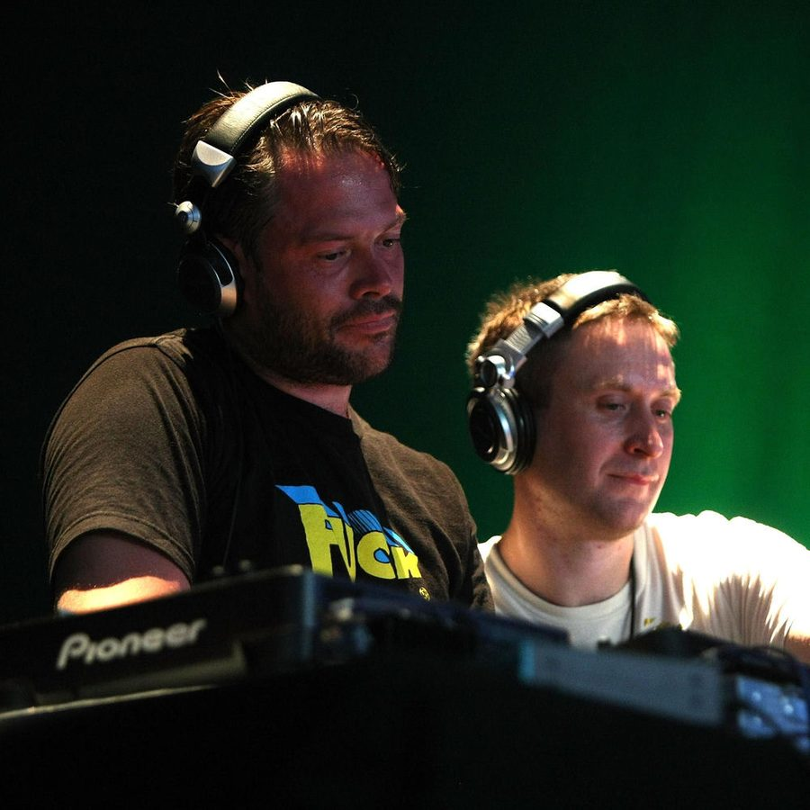

The Plump DJs [Audio]: Grand Hotel is open for business


STREAMING AUDIO INTERVIEW
You could look towards breakbeat duo The Plump DJs as a shining lesson in consistency. Remember back in the opening years of the last decade when everybody’s minds were being blown by the stunning new sounds emanating from the Plumps and the rest of the crew from the Fingerlickin’ Records crew? It may have been a few years ago now, but Andy Gardner and Lee Rous have lost none of their musical shine, dropping their superb Headthrash artist in 2008, and filling their sets with the sort of exclusive edits, rerubs and remixes that many a breakbeat fan would literally murder to get their hands on.
However, last year saw a slight shift in direction for the pair. Their widely discussed compilation for Global Underground showcased their broadened musical focus, casting their net to take in screechy electro and fidget along with their traditional breakbeat sounds, and 2009 also saw them amicably parting ways with Fingerlickin’ after ten years on the books. So what’s next? They’re throwing open the doors to the Grand Hotel, their new independent record label project.
“We basically want to keep the musical package quite broad,” they told ITM. “We want to keep the artists fresh and not too samey, just find people who are really inspiring us and get them onboard. We’ll also be doing some events at Matter and Fabric in London, around six of them in 2009 and hopefully one for each release on the label. We’ve got quite a good starting point for a focus here in the UK and who knows what’s gonna happen at the end of the year, we might be able to take the label on tour.”
For those who want to check in and get a taste of what the Grand Hotel has to offer, you won’t have to wait long because the Plumps will be here shortly for the Good Vibrations Festival tour. ITM’s Angus Paterson steps into the lobby, and has a chat to concierge Lee from the Plump DJs about what they’ve got in store.
For all your Good Vibrations needs, check out ITM’s Festival Page. If you want a taste of the Plump DJs’ new adventures, head to grandhotelrecords.com to download a free track, and check out their national dates below…
Sat 13 Feb – Good Vibrations, Sydney
Sun 14 Feb – Good Vibrations, Perth
Fri 19 Feb – Chinese Laundry, Sydney
Sat 20 Feb – Good Vibrations, Gold Coast
Sun 21 Feb – Good Vibrations, Melbourne